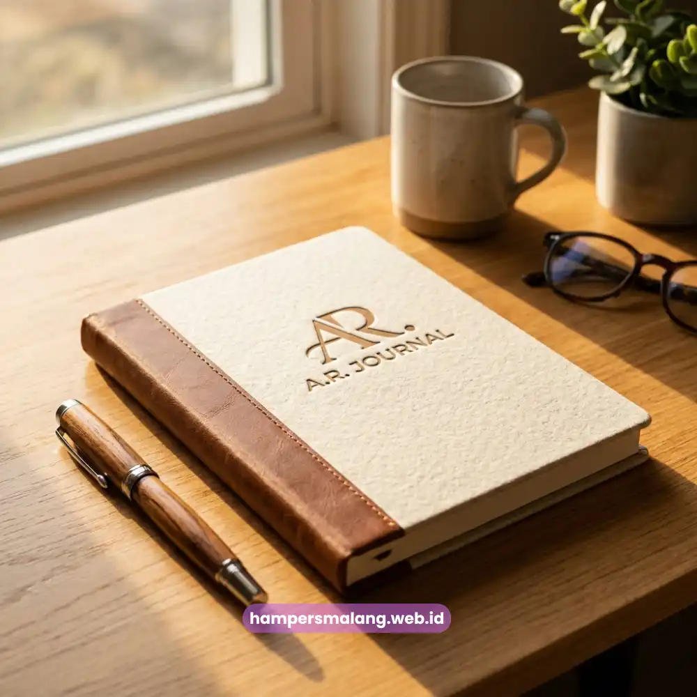
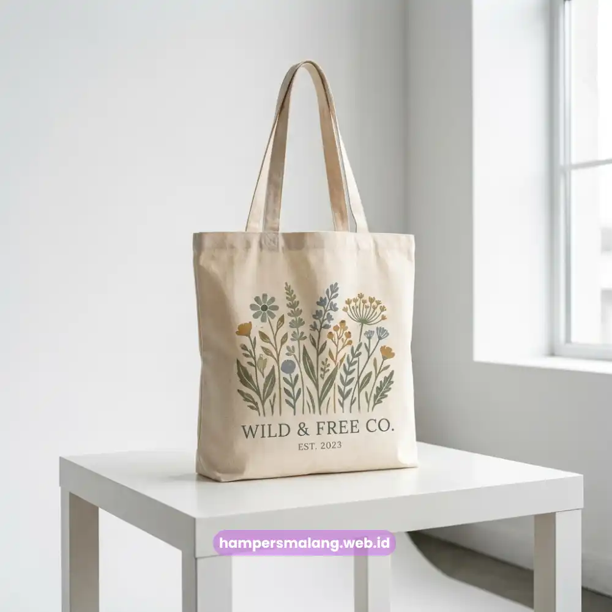

Seminarkit ID menyediakan paket seminar kit profesional berisi tote bag, notebook, dan alat tulis custom untuk kebutuhan seminar kampus, workshop instansi, hingga acara korporat di Denpasar dalam jumlah besar dan waktu produksi terjadwal.
Seminar kit ideal berisi kombinasi tote bag, notebook, alat tulis, dan lanyard yang dapat disesuaikan dengan tema acara.
Paket hemat dan paket premium berbeda pada bahan material dan tingkat personalisasi logo.
Jadwal produksi perlu disiapkan lebih awal untuk acara skala kampus atau instansi dengan jumlah peserta besar.
Melayani pemesanan seminar kit untuk kampus dan instansi di Denpasar dengan estimasi waktu produksi yang jelas.
Isi Ideal Seminar Kit untuk Skala Kampus dan Korporat di Denpasar
Seminar kit yang ideal untuk skala kampus dan korporat umumnya berisi tote bag, notebook custom, alat tulis, dan lanyard yang seluruhnya dapat dicetak logo penyelenggara acara.
Komponen tote bag berfungsi sebagai wadah utama sekaligus media branding yang paling terlihat oleh peserta.
Notebook custom event biasanya dipasangkan dengan pulpen sederhana namun tetap rapi, sementara lanyard digunakan untuk id card peserta selama acara berlangsung.
Untuk acara yang melibatkan instansi pendidikan seperti Universitas Udayana, komponen tambahan seperti stiker atau pin kadang disertakan sebagai pelengkap goodie bag acara tanpa menambah beban produksi secara signifikan.
Susunan isi ini dapat disesuaikan lagi tergantung durasi acara, jumlah sesi, dan apakah acara tersebut bersifat satu hari atau berkelanjutan selama beberapa hari di kawasan MICE Nusa Dua.
Baca Juga: Ide Souvenir Kantor Eksklusif untuk Perusahaan di Denpasar
Perbandingan Paket Seminar Kit Hemat dan Paket Premium
Paket seminar kit hemat menggunakan material standar dengan cetak logo satu warna, sementara paket premium menggunakan material yang lebih tebal dengan opsi cetak logo full color dan finishing tambahan.
Paket hemat cocok untuk acara dengan jumlah peserta sangat besar, di mana efisiensi biaya per unit menjadi prioritas utama tanpa mengurangi fungsi dasar seminar kit.
Paket premium lebih sesuai untuk acara korporat dengan peserta terbatas namun membawa nama besar perusahaan, sehingga kualitas material dan detail cetakan logo menjadi nilai tambah yang terlihat langsung oleh peserta maupun tamu undangan.
Perbedaan lain terletak pada opsi personalisasi tambahan, seperti nama peserta pada notebook atau variasi warna tote bag, yang umumnya hanya tersedia pada paket premium karena membutuhkan proses produksi lebih detail.

Tips Timeline Produksi Seminar Kit agar Tepat Waktu di Denpasar
Timeline produksi seminar kit sebaiknya disiapkan minimal beberapa minggu sebelum tanggal acara, terutama untuk pesanan dengan jumlah besar atau personalisasi logo yang kompleks.
Panitia acara di Denpasar disarankan mengonfirmasi desain logo dan jumlah unit final di tahap awal agar proses cetak dan penjahitan tote bag dapat berjalan sesuai jadwal produksi.
Perubahan desain di tengah proses produksi berpotensi memperpanjang waktu pengerjaan, sehingga sebaiknya seluruh elemen visual disetujui sebelum produksi massal dimulai.
Bagi acara yang melibatkan banyak pihak, seperti kolaborasi kampus dan sponsor korporat, koordinasi jadwal pengiriman ke lokasi acara juga perlu dipastikan lebih awal agar seminar kit siap digunakan tepat pada hari pelaksanaan.
Tanya Jawab Seputar Seminar Kit Profesional
Seminar kit yang ideal biasanya berisi kombinasi tote bag, notebook custom, alat tulis, dan lanyard yang dapat disesuaikan dengan tema acara.
Paket hemat dan premium berbeda pada bahan material yang digunakan dan tingkat personalisasi logo yang diaplikasikan pada setiap item.
Jadwal produksi perlu disiapkan lebih awal, minimal beberapa minggu sebelum acara, terutama untuk skala kampus atau instansi dengan jumlah peserta besar.

Butuh Seminar Kit Eksklusif?
Dapatkan Penawaran Terbaik untuk Acara Seminar Anda.
Ditulis oleh Tim Maroon Souvenir
Ahli dalam perancangan seminar kit dan corporate gift untuk perusahaan. Membantu penyelenggara memberikan kesan mendalam melalui merchandise berkualitas.